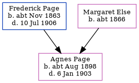

Agnes Jean Page cAug 1898 - 1903
[ Home ] | [ Calendar ] | [ Surnames Index ] | [ Errors ] | [ Family History ]The child of Frederick Page (a bricklayer) and Margaret Else (a charwoman), Agnes Page, the third cousin once-removed on the father's side of Nigel Horne, was born in Folkestone, Kent, England c. Aug 18981,2,3,4 and baptised there on 7 Aug 1898. On 31 Mar 1901, she was living at 11 Park Street in Folkestone1 which is where she died on 6 Jan 19033,4. She was buried at St John's Church, St John's Church Road, Folkestone on 10 Jan 19034.
Parents
- Frederick Stephen was born c. Nov 1863
- Margaret Ann was born c. 1866
Citations
- 1901 England, Wales & Scotland Census - Findmypast (was age 2 and the daughter of the head of the household)
- England & Wales births 1837-2006 - Findmypast
- England & Wales deaths 1837-2007 - Findmypast
- Kent Burials - Findmypast
Media
Agnes Jean Page - burial register

England & Wales births 1837-2006 - BMD/B/1898/3/AZ/000448/285
England & Wales deaths 1837-2007 - BMD/D/1903/1/AZ/000277/204
Kent Burials - GBPRS/CANT/D/95470690
Family Tree
Map
Generated by ged2site. Last updated on Jul 3, 2024